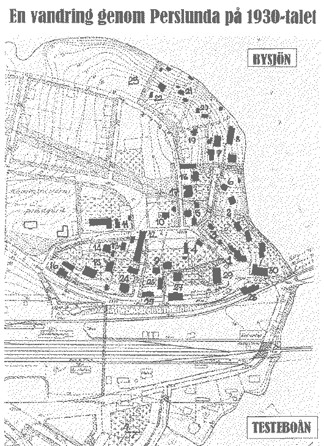

NYHET! Klicka på siffrorna på kartan för att läsa beskrivningen.
Siffrorna på kartan hänvisar till siffrorna i artikelns beskrivningar
På Arkivens dag den 9 November 2002
höll Lennart Backhouse ett föredrag
om sin barndoms Perslunda.
Här följer detta föredrag, något utvidgat.
Mitt Perslunda börjar vid Hedmans Slakteriaffär och slutar vid Centralcaféet. Det är nuvarande Perslundavägens sträckning med angränsande vägar, som nu mera heter Korgmakargränd, Sjöbacksvägen och Skolvägen.
På 30-talet och långt fram i tiden hette det bara Perslunda och så namnet på dem som bodde där, plus en postlåda med ett nummer. Jag minns vi hade 141. Allra sist går vi från Centralcaféet vägen tillbaka mot Hedmans.
Vi börjar alltså vid Hedmans Slakteriaffär; innehavaren Olof Hedman var född i Ockelbo, medan fru Signe härstammade från Ljusnarsberg, Örebro län. Mannen dog i mitten av 30-talet, sedan sköttes rörelsen av änkan med sönerna Sven och Erik samt några anställda. Hedmans var känt för sin s.k. hackkorv. Man kan höra Ockelbobor i förskingringen med nostalgi i rösten tala om denna delikatess.
Åker vi in på gården finner vi ett tvåvåningshus. Där bodde familjerna Sven Hedman och telereparatören Oskar Lantz. Den senare kom från Alunda, Uppsala län; fru Frida, född Engelin var ifrån socknen. De hade en stor barnaskara. Dottern Lilly Elisabeth var gift med Sven Hedman, sonen Åke var bilmekaniker och sonen Göte blev en bekant Ockelbobo. Huset har numera adressen Korgmakargränd 4.
Strax ovanför Hedmans fanns ett uthus, som stod på Nilssons tomt. Det är för länge sedan rivet, men förutom bodar fanns där också en skomakarverkstad som drevs av Alf Lindwall med en gesäll som bodde i en liten stuga på mormor Ida Hessels tomt. Det var bara ett fyrspisrum på ca 8 m2. Alf Lindwall höll inte till så många år på Perslunda utan flyttade till Norra Samhället, där han var född i det så kallade Bygget, medan makan Ida, född Östlund var från Vansbron.
Men vi fortsätter på högra sidan och kommer till "Nilssons Rum för Resande och Matservering". Det var Gerda Nilsson som drev rörelsen. Familjen kom till Perslunda från Gäveränge. Fadern Karl Nilsson, med titeln körkarl, kom från Björnsäter i Skaraborgs län medan makan Elisabet, född Olsson var från orten. Resanderummen gjordes sedermera om till lägenheter. Det är nu adress Korgmakargränd 2.
Mittemot på nuvarande adress Perslundavägen 3 ligger mitt barndomshem. Anders Otto Hessel var född i Dalby, Uppsala län och kom till Ockelbo 1898 med fru Ida, som härstammade från Örebro. Morfar var anställd vid SJ och känd under namnet "Pump-Hessel". Ida var känd för sin stil och höll på med kalla avrivningar upp i 90-årsåldern. Även här fanns rumsuthyrning.
Min mamma Mary åkte till USA 1922 med s/s Drottningholm och gifte sig sedermera med skotten Frank Backhouse. Min bror Buddy föddes i New York. I maj 1929 kom mamma på besök till Sverige och på grund av depressionen och kriget blev hon kvar här. Själv är jag född i Sverige 1929.
I ett rum i uthuset bodde Anna Greta Samuelsson. Som jag minns det, en arbetsmänniska som hjälpte till här och var i gårdarna med potatisupptagning och mattvätt på höstarna i iskallt sjövatten. Hon fick uppleva att vara mor till en son, som förövade de beryktade morden på ett prästpar i Tillberga. Spaningarna efter mördaren försiggick ett tag med stor styrka även i Ockelbo.
Vi gör nu en sväng ned emot Korgmakargränd. Det är nu Perslundavägen 10. I villan på tomten bor fröken Albertina Bernhardina Johannesson, dotter till banmästare Samuel Johannesson från Grytnäs, som dog redan året 1900. En kvinna av gamla stammen, med väninnan på andra sidan vägen var det en strikt "fru Hessel / fröken Johannesson" – relation.
I andra huset på gården, just vid nedfarten till Korgmakargränd, ser vi en skylt på husväggen om "Emma Ekströms Tvätt och Strykning". Emma Ekström var från Rabo, dotter till torparen Anders Ekström. Utom Emma Ekström bodde där Arvid och Ebon Nilsson, elektriker vid Ockelbo Kraft. Dom flyttade efter kriget till Gävle.
Vi fortsätter ner på Korgmakargränd och kommer till Målare Hallbergs hus. Anders Hallberg var Ockelbobo, medan fru Edla Kristina, född Vessling, kom från Gävle. Sonen Sten övertog senare gården.
Nu förflyttar vi oss ett 20-tal meter, där vägen delar sig. Till vänster har vi Åkeriägare Olof Levin, som hade bussar och taxirörelse, samt under kriget tillverkning av gengasved . Ett tag hade han också minkfarm. Olof Levin var hemmansägarson från Nordanåsbo. Makan Agnes Kristina var född Hammarlund. De fick en son, Egon, död i unga år.
Till höger kommer vi till Bäcks Korgfabrik. Anders Bäck kom från Våmhus. Han gjorde konkurs 1939. I fabriksbyggnaden blev det sedermera firman OBO-kläder. Där låg också ett stort båthus tillhörigt flottningsföreningen.
Vi går nu tillbaka och på Perslundavägen 5 finner vi en liten och en stor stuga, vilka ägdes av fabrikör Petrus Lind. I den lilla bodde och arbetade gravören och läderkonstnären Nordfeldt. Han gifte sig 1938 och flyttade till Järbo. I mars 1938 flyttade vi in i lillstugan.
I stora huset hyrde då bl.a. en pensionerad lärarinna. Hon hette nog fröken Johansson och hon var nog sjuk. Jag har inget minne av henne
Cykelreparatör Evald Sjöberg hyrde en lägenhet där före 1938. Droskägare Gustaf Berggren bodde där 1946. I en del av huset hade Elin Gustafsson, född Vesterman, matservering och rumsuthyrning. Elins far var skogvaktare Erik Johan Vesterman från Fasterna, Stockholms län. Modern Anna Matilda Åström var från socknen. De bodde i Murgården.
Mittemot där nu skolmatsalen nu ligger bodde postkörare Bertram Ekelund tillsammans med sin syster Elisabet, hitflyttade från Uppsala. De var syskon med Sara Maria, gift med urmakare Aron Strimbold, med affär mitt emot Ugglebo. Bertram körde ut posten med en liten islandshäst som dragare, senare dock på cykel.
Granne med Ekelunds var plåtslagaren och ordningsmannen Gustav Landblom, kommen från Gävle. Frun Hanna, född Sjöberg, var infödd. Sonen Göte blev en bekant Ockelbobo.
I andra våningen bodde Elon Sjöberg, som bland annat arbetade i skogen. På gårdsplanen fanns verkstadsbyggnaden. I ena halvan var det plåtslageri, i den andra cykelverkstaden. Reparatör var Evald Sjöberg, bror med Elon. Gården ägdes av Evald och Elons far Gustaf Sjöberg, skomakare från Valbo och svärfar till Gustav Landblom. Skomakeriet sköttes från köket på andra våningen. Mamman Maria Erika var född Åsenlund, ett känt skomakarnamn i Ockelbo. Boningshuset stod ungefärligen där skolans aula nu är, verkstaden där slöjdsalen är. Allt revs i tid för skolbygget på 50-talet.
Vi går tillbaka några meter till det som nu är Televerkets automatstation. Området kallade vi "Jonssonsplan" efter Per Jonsson på Fridhem. Där låg en lång träbyggnad, ett uthus.
Vi vänder igen, går tillbaka och svänger vänster till Perslundavägen 9. Där bodde snickaren Johan Hedin, född i Ockelbo. Hans fru Hanna Kristina, född Johansson, var från Åmot.
Huset vid Perslundavägen 11 ägdes nog av flottningsföreningen. Det beboddes i varje fall av flottningsförman Erik Anders Karlsson från Barfva, Södermanland. Makan Olga Sofia var född i Hille.
Vinkelbyggnaden på andra sidan vägen var en lokal tillhörig antingen flottningsföreningen eller Kopparfors. Bland annat förvarades där en vägskrapa. Gustav Landblom arbetade vid dåtidens vägförvaltning också.
Den stora villan på Perslundavägen 13 ägdes av Kopparfors. Där bodde försäljningschef Manne Wallerström.
Nu börjar vi närma oss slutet på Perslundavägen. Vi har bara två gårdar kvar. Till höger är Komministergården med ett uthus, som 1939 började användas som scoutlokal under ledning av komminister Olle Olsson.
Till vänster har vi Centralcaféet, där Sven Lutman var bagare. Han var son till fjärdingsman
Sven Lutman och Johanna Kristina, född Johansson, från Svartnäs och sonson till Sven Lutman och Stina, född Hammarlund i Gäveränge. Tidigare namn var Lundholms Kafé; efter dåvarande idkare.
Vi vänder nu tillbaka till det som nu är Sjöbacksvägen och på höger hand har vi Falks Cykelverkstad. Jag minns han ville ha 5 öre för att pumpa min cykel. Lars Erik Falk var från Örebro, frun Johanna Elisabeth, född Dahlström, var från Söderala. Falks fosterdotter Elsa Sjölander var född i Johannesburg, Sydafrika. Hon övertog sedermera gården tillsammans med sin man, som hade juridikbyrå och allmänt kallades för Ockelbos Perry Mason.
Till nästa gård på samma sida kom Jonas Åkerlund med makan Karin, född Olsson, båda födda i Ulfsta. Från mitten av 10-talet var de bosatta i Åkerby innan de flyttade till Perslunda. I övre våningen hyrde Helge Sundberg med sin fru Greta. Han var Ockelbobo och Konsumföreståndare i norra samhället.
I uthusen, som fortfarande står kvar, var tidigare Björkmans Snickerifabrik. De har tidigare använts som skola. Den äldre Björkman, Anders Gustaf, från Grums i Värmland, dog redan 1920 och han efterträddes av sonen Karl Rickard. Ibland kan man se ett skåp med stämpeln "Björkmans Snickeri i Perslunda" på baksidan. Där skolan nu står var, undantagandes de byggnader som tidigare nämnts, bara åker.
Vid Sjöbacksvägen 12 bodde Harald Skoglund med firma H. Skoglunds Rörmokeri. Harald var son till Elis Skoglund, vars far var mjölnaren Jonas och hans hustru Brita Skoglund i Åkerby.
Här vid nuvarande nr. 14 bodde Gustav Sjöberg i en liten stuga. En friskus som startade badsäsongen i början av maj. Han var linjebyggare för Ockelbo Kraft. I unga år arbetade han på Bäcks Korgfabrik och blev senare avläsare för kraftbolaget. Han var född i Gäveränge, medan fadern kom från Gävle.
Vid nr. 16 var bebyggelsen också av beskedligt format. Där bodde köpmannen Axel Sjöö från Nässjö, med affär vid torget för blommor och grönsaker. Frun Lalla, född Sundberg, var Ockelbobo
Nuvarande Örbackes nr.18, var då bara en bergknalle. Men sedan kommer vi till ett hus, som nu är jämnat med marken. Här bodde flottningsförman och tvättbrädesfabrikör Gustaf Leonard Hammarsten, född i Svabensverk. Andra hustrun Hilma Elisabeth, född Stål, var från socknen. Tvättbrädena var räfflade och gjorda i tjock plåt och de användes ju mycket på den tiden.
Nästa är Sjöbacken, som bebyggdes av Axel Sjöö i slutet av 20-talet Det är en sommarservering och mycket uppskattad redan på 30-talet.
Vi går nu från Centralcaféet mot Sundsbron.
Fridhem, här bodde häradsdomaren Per Jonsson med maka. Han kom från Bollnäs, gifte sig med Kristina Elisabet Jonsson, bondedotter i Tomtnäs. Sedermera flyttade de barnlösa makarna till Perslunda.
Ockelbo Sparbank grundades 1920. Efter två år valdes Per Jonsson till kassör och expeditionen flyttades till hans gård, där den blev kvar till 1941 års slut. Då flyttade banken till Andersson o. Perssons nybyggda fastighet där Motorcentrum nu är.
Här hade Östen Sjöberg sin frisersalong i ena ändan. Han var bror med Evald och Elon. I andra halvan hade Oscaria sin skoaffär till början av 40-talet, då den flyttade till Andersson och Perssons hus.
Sedan följde Ester Berggrens Konfektionsaffär. Ester var gift med droskchaufför Gustaf berggren. Han var från Djupvik nära Söderhamn, medan Ester växte upp i Arbrå. Affären drevs på 40-talet.
En äldre byggnad där Hälsingebanken tidigare höll till. Den köptes av Per Abraham Larsson i Mo och blev lokal för Jordbrukskassan. Denna startade 1932 i P. A. Larssons gård och blev kvar där till 1949. De som skötte bankaffärerna var Gunnar Olsson i Östby, Joel Segård i Säbyggeby och Folke Lundh i Mo. Från denna byggnad gick flytten 1963 till egen fastighet mitt emot Andersson o. Persson.
En annan byggnad ovanför innehöll en flottarbarack och Lundins Skomakarverkstad.
Här hade fröknarna Lindqvist sin Modeaffär. Här fanns också telegraf och telefonväxel. Telefonin sköttes först av en telefonförening, men 1916 övertog Telegrafverket stationen och Modeaffären flyttade. Fastigheten köptes 1929 av Ockelbo Kraft AB för 35.000 kronor av Erik Lundgren i Mo. Bolaget flyttade också in här med en del av sin verksamhet.
Huset ovanför var ett uthus och förråd.
I backen fanns en smedja med hovslageri i nedre delen, i den övre var det bilverkstad och sedan vulkverkstad.
Smidesmästare var Anders Elof Söderkvist från Karlsvik i Småland; fru Anna, född Sjöblom, kom från Hedesunda. Den berömda operasångerskan Daga Söderkvist var deras dotter
Hovslagaren Jonas Bäcklin var född i Säbyggeby och bodde där. Han var en kraftig person och som dessutom var en respektingivande ordningsman.
Bilverkstaden drevs av Gösta Andersson från Gäveränge, allmänt kallad Motor-Andersson. Han sågs ofta med en otänd cigarr i mungipan. När verkstaden lades ned flyttade han till Andersson o. Perssons verkstad, där han blev verkmästare och sysslade mycket med omlindning av motorer. Lokalen blev alltså sedan Vulkverkstad. Idkaren av denna verkstad var Lundqvist, vars brorson sedan drev en likadan verkstad nedan för Ugglebo.
Här var tidigare förrådsbyggnad till Anders Hugo Lohrdéns affär. Sedan denna brunnit blev här stall till smedjan och andravåningen tjänstgjorde ibland som auktionskammare.
Längre ner i backen hade Hedvig Franksson, född Wigholm, haft sin fotoateljé. Nu fanns på denna plats Axel Anderssons Järnhandel. Man hörde på talet att han kom söderifrån. Han var nämligen född i Mistelås i Småland. Nu fanns här också Åke Petterssons Uraffär. Denne var Ockelbobo och boende i Åbacka. Intill uraffären hade Handelsbanken ett kontor. I bottenvåningen hade Helmer Östberg sin Specerihandel. Helmer kom från Ovansjö, hans fru Ingeborg härstammade från Lilla Mellösa i Södermanland.
Så var då promenaden till ända, en återblick på hur det var för 60-70 år sedan; en tid som känns så avlägsen med tanke på alla förändringar som skett.